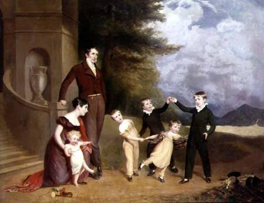

Стиль зародился в революционной Франции и получил дальнейшее развитие при Наполеоне. Он продержался до 1820-х годов, сменившись ненадолго стилем Бидермейер, а затем Викторианским. На моду этого периода значительно повлияла усталость от прежней роскоши, от только что свергнутой буржуазии. Костюмы этого периода отличаются свободой, легкостью, высоким уровнем самовыражения и отказом от стремления обозначить через костюм свое положение в обществе.
У людей возникает стремление жить в большей гармонии с окружающим миром, что выражается и в костюме через возврат к античным идеалам и формам.
Именно в ампирный период появляются первые модные журналы, модные тенденции становятся более общными среди разных стран. В моду входят светлые оттенки и легкие, зачастую полупрозрачные ткани.
Размытие сословных границ сказывается и на женском костюме. Плотный стесняющий движения корсет сменяется на бюстье из тонких тканей, исчезает каркасная структура под юбкой. Силуэт становится свободным, линия талия поднимается довольно высоко, платье не сковывает движения.
В моду входит жакет Спенсер и различные жилеты, перенятые из мужского костюма. Голову начинают украшать, повязывать платки на восточный манер. Становятся популярны тюрбаны, чалмы, «китайские» шляпки, поверх которых также могли повязываться бусы, вставляться перья. Особую популярность приобретают шали.
Фома платья этого периода сохраняет свою актуальность и популярность и в современной моде, как вечерней, так и повседневной.
В мужском костюме доминируют однотонные неяркие цвета. Ярким пятном служит галстук и иногда жилет, рубашка остается белой. Кюлоты в течение этого периода сменяются брюками, а фрак постепенно начинает приобретать современные формы.
В моду входят высокие шляпы, цилиндры. Из обязательных украшений — рубашка для галстука и часы. Также стали популярны трости.